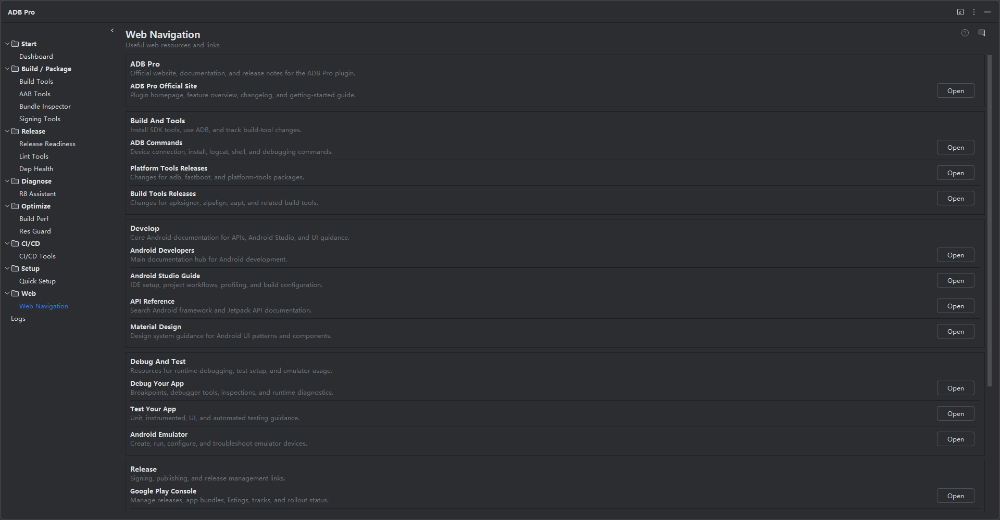

在 IDE 内整理 Android 开发、发布、后端、监控、分析和商店相关资源入口。

Android 发版涉及 Android Developers、Google Play Console、Firebase、Sentry、CI 平台、后端服务和各类文档。资源散落在浏览器书签里，团队成员很难保持一致。
扫描 Android 项目并引导配置渠道、SDK、R8、Res Guard、CI/CD 和构建性能相关选项。
打开相关 ADB Pro 功能页面，继续查看这一工作流。
根据 Android 项目配置生成 GitHub Actions、GitLab CI 或 Jenkins 发布流水线。
使用 ADB Pro 管理构建、签名、AAB 安装、R8、资源混淆和发版检查。